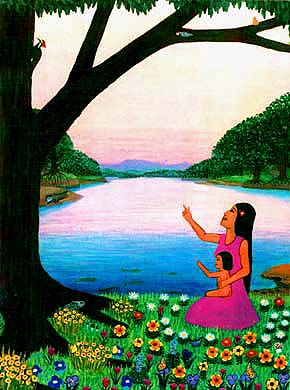

Once upon a time, there was a boy called Red Feather. He was in the Bird Clan, of the Bongo Tribe. They were fishers of the Singing River. He loved to drum and sing all the time, non-stop. Some people thought he was a pest, but he was so much fun, they loved him anyway.
One night the earth shook, the sky thundered, and the river stopped. The people were afraid. At dawn, Chief Otter Lips ordered the tribe down to the river for a ceremony. They begged the river to return.
Everyone went down to the river, except for Red Feather. He played hooky and went to a berry parch on a hill further up the river. He was singing softly and happily munching berries. All of a sudden, he saw a flash flood rushing around the bend. Instead of saving himself, he ran down to a big hollow log on a sand bar along the river side. He started drumming on the log and began belting out the "Big Bad Water Blues."
The tribe stopped and listend when they heard the music. Chief Lips was angry to find that Red Feather was long gone. But Water Lily understood the warning, and so the people escaped. Just before the flood waters reached Red Feather, the River Spirit turned him into a woodpecker, and he flew away to safety.
Now he wears a bright red topknot and spends his days playing tree tunes to his sweetheart.
David B. Martinez © 1992